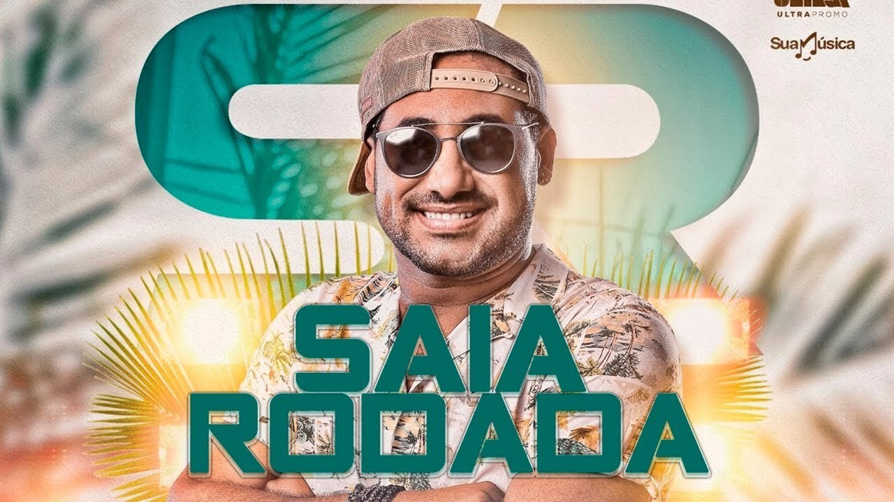

Saia Rodada é uma banda de forró eletrônico, criada em Caraúbas, interior do Rio Grande do Norte, em abril de 2000. Raí nasceu em 25 de março de 1981 no município de Umarizal.
Saia Rodada contém uma de minhas músicas favoritas:"Bebe e vem me procurar"
Xand Avião, nome artístco de José Alexandre da Silva Filho (Itaú, 24 de março de 1982) é um cantor e compositor de forró eletrônico e também empresário brasileiro.
Xand Avião contém uma de minhas músicas favoritas:"Casal raiz"
Mastruz com Leite é uma banda brasileira de forró, oriunda da cidade de Fortaleza, fundada pelo empresário Emanuel Gurgel.
Mastruz, como as demais bandas, contém uma de minhas músicas favoritas:"Explode Coração"
Gosto de outras bandas e também de outros estilos musicais, dentre eles o sertanejo,brega funk, internacionais.
Marília Dias Mendonça é uma cantora, compositora e instrumentista brasileira de música sertaneja.
Paloma Roberta Silva Santos, mais conhecida como MC Loma, é uma cantora e compositora brasileira.
Shawn Peter Raul Mendes é um cantor e um músico canadense, de origem portuguesa e britânica. Seu single de estreia, "Life of the Party", o fez o artista mais jovem a estrear entre as 25 primeiras posições da Billboard Hot 100.